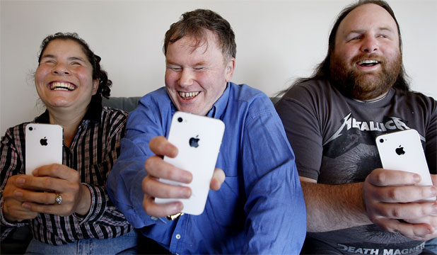
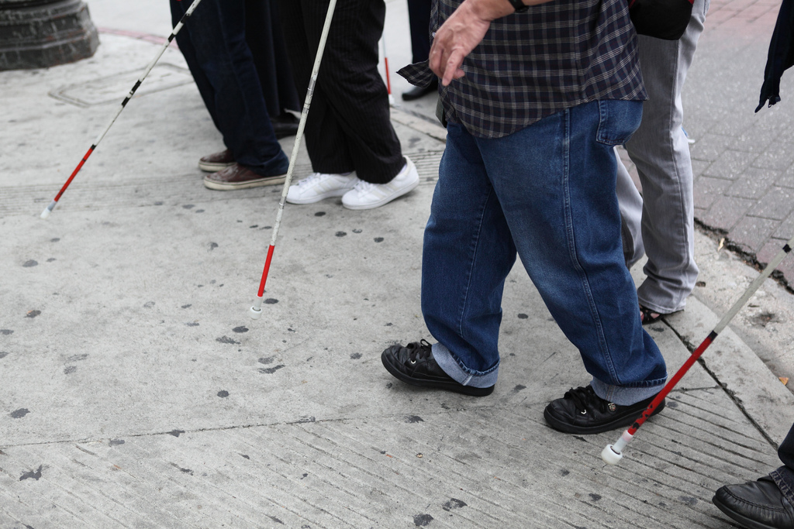

Welcome to Girl Develop It
Web Accessibility
Instructor Intro
TA Intro
Student Intros or Ice Breaker
Course Goals
Course Outline or Agenda
Before we start...
- Display preferred name and/or pronoun
- Don't be camera-shy üôÇ
- Participate and ask questions
- Every question is important
- Have fun!
Who can use your sites?
Photo credit: DeafTech News
What is accessibility?
- Accessibility is about making your sites useful to as many people as possible.
- Accessibility is about overcoming barriers.
- Accessibility is about helping your users.
Why worry?
Photo credit: circulating opens in a new window cc opens in a new window
Why make your sites accessible?
- Expand your potential audience!
- 85.3 million people in the US have a disability,
- 12.3 million people have a visual disability, and
- 17.1 million people have hearing disability (source opens in a new window).
- Be in compliance with legal guidelines, like Section 504/508 and WCAG.
- Avoid potential lawsuits opens in a new window.
- Help people get equal access.
Types of Disability
- Visual disabilities: blind or low vision, color blind
- Hearing disabilities: deaf or hard of hearing
- Physical disabilities: Parkinson's, quadriplegic, epileptic
- Cognitive disabilities: dyslexia, ADHD, short term memory loss
- Also: Permanent, temporary, and situational
What are barriers to access?
Photo credit: sciencesque opens in a new window cc opens in a new window
Accessibility is for everyone!

Photo credit: Sylvia Pellicore cc opens in a new window
Benefits of Accessibility
- Curb cuts were designed for wheelchairs, but others use them. Similarly, accessibility features end up helping everyone.
- Many times, good design practices create accessibility as a side effect.
- Accessibility features, like good alt text, can improve your search engine placement.
Web Content Accessibility Guidelines
- An international set of guidlines for web accessibility
- The basis for Section 508, ADA, and EN 310 549
- Principles: Perceivable, Operable, Understandable, and Robust
- Versions: 2.0 (2008), 2.1 (2018), 2.2 (2023)
- Levels: A, AA, AAA
- Most companies go for 2.0 AA or 2.1 AA.
Accessibility Conformance Reports
- Each software product should have regular audits.
- Audit results are used in VPATs to generate ACRs.
- Customers, especially government organizations, care about accessibility and ask about ACRs.
- ACRs should be available through a company's Accessibility page.
Accessibility is a continuum
- WCAG
- Best Practices
- User Research
WCAG is the bare minimum for accessibility. We can do more.
Visual disabilities
Photo credit: Braille Institute opens in a new window cc opens in a new window
What assitive technology do people use?
- Browser zoom
- Browser magnification
- High contrast displays
- Screen readers
Screen reader demo
Provide an alternate path
Photo credit: Linh H. Nguyen opens in a new window cc opens in a new window
Alt text
- Alternate text describes pictorial content in words.
- Pay attention to context.
- Try to keep the alt text to 140 characters or fewer.
- Describe the function, not the content.
- If an image is purely decorative, use
alt=""to instruct a screen reader to skip it.
<img src="cats.jpg" alt="A tuxedo cat and a black
cat curled up next to each other and sharing a cushion">
Let's try it
Provide alt text for the images on the GDI website opens in a new window.
Other tips for screen readers
- Headings, skip links, and landmarks give users a way to navigate through a page.
- Content is more than just visual.
- External link indicators prevent unexpected page changes.
- Use tables for tabular data only.
Provide contrast
Photo credit: Fongsaosfen opens in a new window cc opens in a new window
More on visual disabilities
- Have a minimum of contrast ratio of 4.5:1 for normal text and 3:1 for large text and graphics. (Checker opens in a new window)
- If you use color to indicate something, also use another indicator. For example, underline links or mark a required field with an asterisk.
- Red/green color blindness is the most common, so avoid green on red.
- Include color names in product descriptions and show examples (article opens in a new window)
Color Contrast Demo
Automatic captions can be problematic

Credit: Sylvia Pellicore, from YouTube
Hearing disabilities
- Most deaf or hard of hearing people have limited difficulty with web accessibility.
- Provide captions or transcripts for multimedia.
- Don't rely on sounds to convey information, like an "alert" noise.
- 80% of people who use captions don't have a hearing disability. (source) opens in a new window
Video
Physical disabilities
- Many users with limited mobility interact with the screen via keyboard.
- Other users use a mouse, but have trouble with fine motor control.
- All actions must be doable by keyboard.
- Make clickable elements large, and put space between them.
- Animations with rapid flickers are not only annoying, they can trigger epileptic seizures.
Lose the Mouse
Photo credit: The IP Kat opens in a new window
Don't overwhelm

Photo credit: Thomas Hawk opens in a new window cc opens in a new window
Provide plenty of time

Photo credit: Bethan opens in a new window cc opens in a new window
CAPTCHAs don't just catch robots
Photo credit: baboon opens in a new window cc opens in a new window
Dealing with cognitive disabilities
- Cognitive accessibility practices make it easier for people to process information.
- Use clear, simple language; minimize mental load.
- Respect reduced motion preferences and let people pause or hide motion.
- If you have timed content, provide controls or allow users to extend time.
- CAPTCHAs are difficult for users with learning disabilities. Consider alternative methods opens in a new window.
Let's try it
Visit a site you use frequently. Identify one accessibility feature that is part of the site and one feature you would change.
Break
Photo credit: Sam Felder opens in a new window cc opens in a new window
Home pages with most common WCAG failures (% of home pages)
- 83.6% - Low contrast text
- 58.2% - Missing alternative text
- 50.1% - Empty links
- 45.9% - Missing form labels
- 27.5% - Empty buttons
- 18.6% - Missing document language
Source: The 2023 WebAIM Million report opens in a new window
Relative cost to fix bugs, based on time of detection
- 1x - Requirements/Architecture
- 5x - Coding
- 10x - Integration/Component Testing
- 15x - System/Acceptance Testing
- 30x - Production/Post-release
How do I code for accessibility?
HTML
- Automated scanning
- Headings & Semantic Structure
- Form Labels & Text Alternatives
- Tab Index
- External link indicators
Automated Scanning
- axe DevTools, Lighthouse, Microsoft Accessibility Insights, and Wave scan the DOM.
- Automation can catch most, but not all accessibility issues.
- Limitations: dynamic content, color contrast, content quality
Automated scanner demo
HTML Headings
Semantic structure is one of the most important usability features for screen reader users, as it helps them more easily understand and navigate the page structure. Headings also help all your users can and understand content.
- Headings should visually appear like headings,
- Not everything that looks like a heading should be a heading.
<h1>Most important</h1>
<h2>Next most important</h2>
<h3>Third most important</h3>
<h4>Other heading</h4>
Headings Demo
Form Labels
How do they work?
<label for="name-field">Name</label>
<input type="text" id="name-field" name="name-field"
placeholder="Type your furry friend's name">
Let's develop it
Add labels to an HTML form
<label for="name-field">Label</label>
<input type="text" id="name-field"
name="name-field" placeholder="Type your name" />
External Links
Provide affordances to warn users.

Opening new windows automatically when a link is activated can be disorienting for people who have difficulty perceiving visual content, and for some people with cognitive disabilities, if they are not warned in advance.

External Links
Let's Look at Some Code
<a href="goofy.html">Goofy page<a>
<a href="http://disney.com" target="_blank"
aria-describedby="Opens in a new window"
class="external-link">
Disney.com
<span class="offscreen">
opens in a new window
<span>
</a>
For links that open in new windows, an offscreen span inside the link is most reliable for screen readers, but aria-describedby="" can also be used.
Tab Index
What is it?
The tabindex attribute explicitly defines the tab order for focusable elements within a page. It can be used to define whether elements should be focusable. (WebAIM opens in a new window)
Let's Develop It
Explore tab-index on native and non-native elements
<h1 tabindex="0">Focusable Heading<h1>
<a href="#" tabindex="-1">Link focusable only by script</a>
<div tabindex="1">Div tabbable in new order<div>
Codepen: tabindex opens in a new window
Note: tabindex values higher than 0 require managing the entire page's tab order. Use with caution!
How do I code for accessibility?
CSS
- Visually Hidden Content
- Really Hidden
Visually Hidden Content
How does it work?
/* Hide only visually, but have it available for screenreaders.
Copied from HTML5 Boilerplate*/
.visuallyhidden {
border: 0;
clip: rect(0 0 0 0);
height: 1px;
margin: -1px;
overflow: hidden;
padding: 0;
position: absolute;
width: 1px;
}
Really Hidden
How to show and hide content from all users
.reallyHidden {
display: none;
visibility: hidden;
}
.notHidden {
display: block;
visibility: visible;
}
Home pages with most common WCAG failures (% of home pages)
- 83.6% - Low contrast text
- 58.2% - Missing alternative text
- 50.1% - Empty links
- 45.9% - Missing form labels
- 27.5% - Empty buttons
- 18.6% - Missing document language
Source: The 2023 WebAIM Million report opens in a new window
Let's Develop It
Explore keyboard navigation with content that is hidden and offscreen
How do I code for accessibility?
Accessible Rich
Internet Applications
- First rule of ARIA: Don't use ARIA.
- Expands HTML's native vocabulary.
- Communicates state and purpose to assistive technologies.
- Used mainly for custom widgets and web applications.
ARIA Attributes
- Name: What is this thing called?
- Role: What does this thing do?
- State: What is the current condition of this particular thing?
- Properties: What is the nature of this thing?
<div aria-label="Tomatoes"
role="checkbox"
aria-checked="true"
aria-disabled="true">ARIA demo
Chrome Developer Tools Accessibility panel
Video
Show your users some love!
Photo credit: Sam Felder opens in a new window cc opens in a new window
You did it!

Resources
Resources, continued
Give Us Your Feedback
Course Survey
Q&A
Upcoming GDI Courses
- Python Web Apps
- Intro to HTML and CSS
- Intro to JavaScript